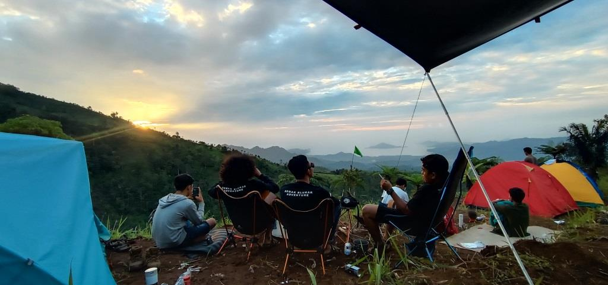

Sejarah
Setelah Inggris secara resmi menyerahkan pemerintahan di Bengkulu kepada Belanda pada 6 April 1825,
nasib masyarakat Bengkulu dan daerah pesisir tetap menderita di bawah belenggu kolonial. Kondisi itu
berbeda dengan masyarakat Rejang di daerah pedalaman atau pegunungan yang tidak pernah mengalami
penjajahan hingga tahun 1860. Keberuntungan itu dikarenakan letak daerah Rejang yang jauh di
pedalaman dan dikelilingi bukit barisan serta hutan rimba yang masih sangat belantara. Sebelum
Belanda menyambangi Tanah Pat Petulai, peradaban masyarakat Rejang sudah lebih maju dibandingkan
dengan masyarakat lainnya. Hal ini dibuktikan dalam masyarakat Rejang telah memiliki pemerintahan
masyarakatnya sendiri yang terdiri dari 5 orang tuwi kutei. Kutei merupakan suatu masyarakat hukum
adat asli yang berdiri dan geneologis terdiri dari sekurang-kurangnya 10 hingga 15 keluarga atau
rumah, sedangkan tuwi kutei merupakan kepala kutei yang dipilih berdasarkan garis keturunan pendiri
petulai (kesatuan kekeluargaan masyarakat Rejang yang asli).
Dengan adanya sistem petulai tersebut, menandakan masyarakat Rejang sudah memiliki hukum adat yang
dipatuhi oleh pendukungnya. Peradaban yang maju pada masyarakat Rejang juga ditandai bahwa suku
Rejang telah memiliki aksara sendiri sebagai alat penyampai informasi, yakni aksara kaganga. Hingga
saat ini, masyarakat Rejang yang asli masih memiliki peradaban yang menjunjung harga diri. Sering
terjadinya kerusakan peradaban dalam masyarakat Rejang karena banyak penduduk di daerah Rejang yang
mampu berbahasa Rejang, namun secara silsilah keturunan mereka bukanlah masyarakat Rejang yang asli
(garis keturunan bukan patrilineal). Hal ini menjadi fenomena yang mencoreng citra suku Rejang.
Bahasa
Suku Rejang memiliki perbedaan yang mencolok dalam dialek penuturan bahasa. Dialek Rejang Kepahiang
memiliki perbedaan dengan dialek Rejang di Kabupaten Rejang Lebong yang dikenal dengan dialek Rejang
Curup, dialek Rejang Bengkulu Utara, dialek Rejang Bengkulu Tengah, dan dialek Rejang yang
penduduknya di wilayah kabupaten Lebong. Secara kenyataan yang ada, dialek dominan Rejang terdiri
tiga macam. Dialek tersebut adalah sebagai berikut: Dialek Rejang Kepahiang (mencakup wilayah
Kabupaten Kepahiang) Dialek Rejang Curup (mencakup wilayah Kabupaten Rejang Lebong, Kabupaten
Bengkulu Tengah, dan Kabupaten Bengkulu Utara) Dialek Rejang Lebong (mencakup wilayah Kabupaten
Lebong dan wilayah Kabupaten Bengkulu Utara yang berdekatan dengan wilayah Kabupaten Lebong)
Dari tiga pengelompokan dialek Rejang tersebut, saat ini Rejang terbagi menjadi Rejang Kepahiang,
Rejang Curup, dan Rejang Lebong. Namun, meskipun dialek dari ketiga bahasa Rejang tersebut relatif
berbeda, tetapi setiap penutur asli bahasa Rejang dapat memahami perbedaan kosakata pada saat
komunikasi berlangsung. Karena perbedaan tersebut seperti perbedaan dialek pada bahasa Inggris
Amerika, bahasa Inggris Britania, dan bahasa Inggris Australia. Secara filosofis, perbedaan dialek
bahasa Rejang terjadi karena faktor geografis, faktor sosial, dan faktor psikologis dari suku Rejang
itu sendiri.
Geografis
Kabupaten Rejang Lebong adalah salah satu kabupaten di Provinsi Bengkulu, Indonesia. Kabupaten ini
memiliki luas wilayah 1.515,76 km² dan populasi sekitar 257.498 jiwa (2016). Kabupaten ini beribu
kota di Curup yang berada pada ketinggian 600-700 mdpl.[4] Kabupaten ini terletak di luak Ulu Musi,
sebuah lembah yang dialiri Sungai Musi di tengah rangkaian Bukit Barisan dan berjarak 85 km dari
Kota Bengkulu yang merupakan ibu kota provinsi.
Secara topografi, Kabupaten Rejang Lebong merupakan daerah yang berbukit-bukit, yang merupakan
bagian dari Jajaran Bukit Barisan dengan ketinggian 100 hingga 1000 mdpl. Dua puncak utama di daerah
ini yaitu Bukit Kaba dan Bukit Daun, secara lokal dalam bahasa Rejang dikenal masing-masing dengan
nama Têbo Kabêak dan Têbo Dawên. Secara umum kondisi fisik Kabupaten Rejang Lebong sebagai berikut:
Kelerengan: datar sampai bergelombang, Jenis Tanah: Andosol, Regosol, Podsolik, Latasol dan
Alluvial, Tekstur Tanah: sedang, lempung dan sedikit berpasir dengan pH tanah 4,5 –7,5 , Kedalaman
efektif Tanah : sebagian besar terdiri atas kedalaman 60 cm hingga lebih dari 90 cm, sebagian
terdapat erosi ringan dengan tingkat pengikisan 0 – 10 %.
Wisata
Kabupaten Rejang Lebong dengan ibukotanya Kota Curup merupakan salah satu kabupaten di Provinsi
Bengkulu yang memiliki banyak tempat wisata. Kota Curup berada di sebuah lembah yang berada ditengah
rangkain Bukit Barisan. Kota yang berjarak 85 KM dari Kota Bengkulu ibu kota Provinsi Bengkulu ini
berada pada ketinggian mulai dari 600 Mdpl.
Karena berada diketinggian lebih dari 600 Mdpl Kota Curup selama ini dikenal sebagai dengan udara
sejuk sehingga banyak orang menyebutnya dengan Kota Sejuk Curup.Kota dengan sebutan Curup Kota
Idaman ini menawarkan berbagai tempat wisata baik alami maupun buatan.
Meskipun beberapa tempat wisata berada diluar Kota Curup, namun wisatawan dari luar Kota Curup tetap
mengatakan wisata di Curup. Lalu tempat wisata apa saja yang bisa anda kunjungi saat berada di
Curup, Rejang Lebong Bengkulu. Berikut tempat-tempat wisata di Kota Curup yang bisa wisatawan
kunjungi
Pemandian Suban Air Panas
Wisata di Kota Curup pertama yang bisa ada kunjungi ini adalah wisata pemandian Suban Air Panas.
Objek wisata ini sudah lama dikenal dan menjadi destinasi favorit wisatawan saat berwisata ke
Kota Curup.
Objek wisata ini terletak di Kelurahan Cawang Baru Kecamatan Curup Timur atau sekitar 6 KM dari
Pusat Kota Curup dan 94 KM dari Bandara Fatmawati Soekarno Bengkulu. Akses menuju objek wisata
ini sudah sangat baik karena sampai di parkiran kendaraan jalannya sudah mulus atau hotmix,
sehingga tidak ada kendala untuk semua jenis kendaraan.
Untuk masuk ke objek wisata yang biasanya ramai dikunjungi saat akhir pekan terutama saat libur
lebaran dan tahun baru ini, wisatawan cukup membayar Rp 10 ribu untuk satu orang dewasa dan Rp 5
ribu untuk anak-anak. Sedangkan untuk biaya parkir Rp 2 ribu untuk kendaraan roda dua dan Rp 5
ribu untuk kendaraan roda empat.
Di komplek wisata Suban Air Panas ini ada dua wisata lain yang bisa wisatawan kunjungi yaitu Air
Terjun Cabang Dua dan Suban Lesung Gua Batu. Untuk masuk ke kedua objek wisata ini pengunjung
harus membayar lagi karena pengelolaannya dilakukan secara pribadi oleh pemiliknya.
Bukit Kaba
Tempat wisata di Kota Curup Selanjutnya adalah Bukit Kaba. Bukit kaba ini sebenarnya adalah
gunung api aktif. Meskipun objek wisata ini merupakan gunung namun dikalangan masyarakat hingga
pendaki lebih dikenal dengan Bukit Kaba. Gunung yang memiliki ketinggian 1.938 Mdpl ini berjarak
sekitar 15 KM dari Kota Curup. Akses melakukan pendakian ke puncak Bukit Kaba melalui desa
Sumber Urip. Ada dua jalur pendakian yang bisa dilakui yang pertama melalui jalur rimba yang
hanya bisa dengan berjalan kali, sedangkan jalur kedua yaitu jalur kendaraan yaitu jalur yang
bisa dilalui kendaraan roda dua. Puncak Bukit Kaba ini memiliki dua buah kawah yaitu kawah mati
yang dasarnya memiliki air berwarna biru sedangkan satu lagi kawah aktif yang mengeluarkan asap
belerang dibeberapa titik.
Bukit Bintang Jipang
Salah satu tempat wisata di Kota Curup yang dalam beberapa tahun terakhir cukup hits adalah
Bukit Bintang Jipang atau Bukit Jipang. Objek wisata ini berada di Jalan Bukit Jalal Desa Air
Meles Atas Kecamatan Selupu Rejang Kabupaten Rejang Lebong dengan jarak tempuh sekitar 20 menit
dari Kota Curup Ibu Kota Kabupaten Rejang Lebong atau sekitar 2 jam dari Bandara Fatmawati
Soekarno Bengkulu. Di objek wisata Bukit Jipang wisatawan hanya dikenakan tarif Rp 10 ribu untuk
satu orang saja sedangkan jika ingin bercamping dikenakan tarif Rp 35 ribu. Kemudian bila tidak
suka tidur di tenda objek wisata ini juga telah menyediakan tempat penginapan baik yang bisa
digunakan untuk beramai-ramai maupun sendiri. Di objek wisata ini pengelola telah membangun
sejumlah spot foto yang instagrammable mulai dari jembatan kaca, ayunan, sangkar burung dan
sejumlah spot foto lainnya dengan latar Bukit Kaba maupun Kota Curup yang berlatar Bukit Basah
dan Bukit Daun.
Pemandian Gerojogan Sewu
Objek wisata pemandian gerojogan sewu merupakan salah satu wisata pemandian air panas yang ada
di Kota Curup. Ojek wisata ini berada di Desa Sumber Urip Kecamatan Selupu Rejang yaitu tepat
berada dikaki Bukit Kaba atau sekitar 20 KM dari pusat Kota Curup ibu kota Kabupaten Rejang
Lebong dan 4 KM dari jalan lintas Curup Lubuklinggau dan 110 KM dari Bandara Fatmawati Soekarno
Bengkulu.
Untuk masuk ke lokasi wisata ini pengunjung dewasa akan dikenakan tarif Rp 10.000,- dan
anak-anak Rp 5.000,- dan parkir sepeda motor Rp 5.000,-. Sedangkan fasilitas yang tersedia mulai
dari musola, kamar ganti dan WC serta beberapa pondokan yang bisa digunakan wisatawan untuk
melatakkan barang atau untuk makan bersama keluarga. Objek wisata ini buka setiap hari mulai
pukul 07.30 WIB hingga pukul 18.00 WIB.
Bukit Batu Lantana

Objek wisata di Kota Curup yang terakhir yang bisa anda kunjungi adalah Objek Wisata Bukit Batu
Lantana. Objek wisata ini berada di Desa Air Meles Atas Kecamatan Selupu Rejang.
Di objek wisata ini pengunjung akan dikenakan tarif Rp 10.000 ribu dan bisa menikmati sejumlah
fasilitas yang ada. Sesuai dengan namanya, objek wisata ini adalah kawasan perbukitan batu yang
disulap menjadi tempat wisata. Dari objek wisata ini wisatawan bisa menikmati keindahan kota
curup dari ketinggian terutama saat malam hari.